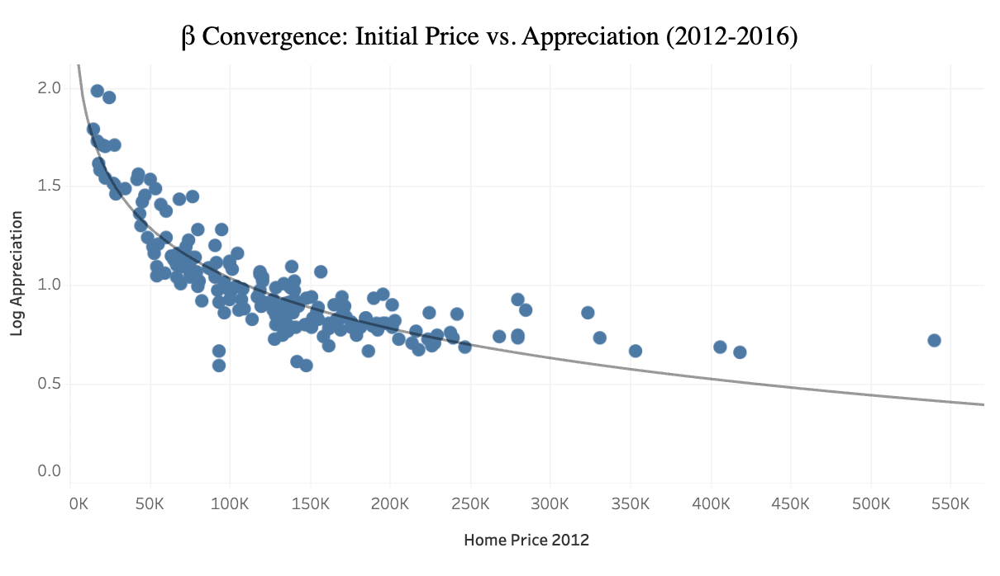
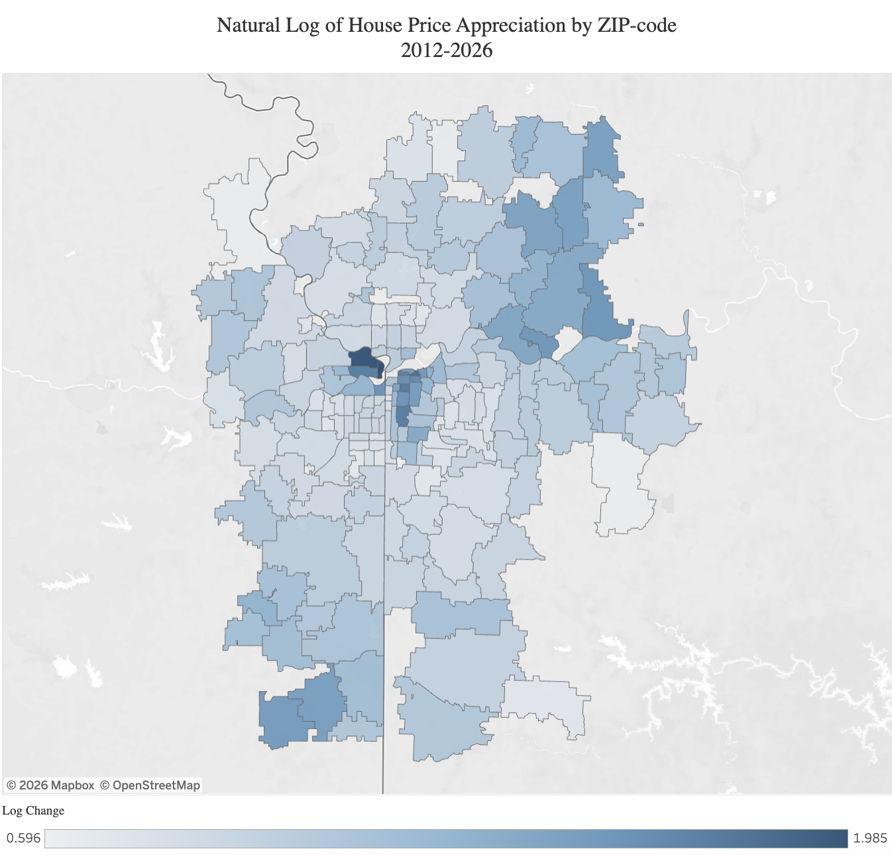
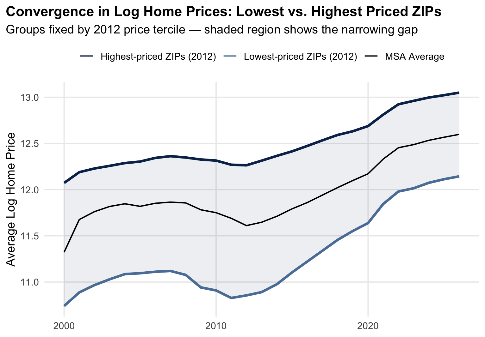

Overview
How does home value appreciation differ across ZIP-codes?
That is the core question of this project. And it has important implications for home owners, real estate developers, investors, and policy makers. In investigating this question for Kansas City between 2000 and 2026, I uncovered two seperate but connected phanomna: lower-priced ZIP-codes are growing faster than higher-priced ones (known as Beta Convergenvce) and the gap is shrinking (known as Sigma Convergence).
Key Takeaways
Lower-priced ZIP-codes converge toward higher-priced ones at roughly 3% per year, a rate that has held stable since 2012.
Price dispersion narrowed overall, but reversed between 2007–2014 as the foreclosure crisis hit lower-tier markets hardest.
Appreciation clusters geographically (Moran's I = 0.632), so comps should be pulled by radius rather than restricted to a single ZIP-code.
Beta Convergence
Evidence for Beta convergence appears when the natural log of price appercaition is inversely correlated with starting price - a suggestion that ZIP-codes with low initial home prices are apperciating quickly.
Appreciation Rate vs. Initial Price by ZIP Code

Figure 1. Beta convergence is evident when initial price is negatively correlated with appreciation rate.
It can also be helpful to map the apperciation rate by ZIP-code to understand the spatial relationships – is one ZIP-code's apperciation rate affected by its location or factors within an adjoining ZIP-code? Spatial relationships are important for this type of economics because they risk biasing both coefficients and error terms. I used Moran's I to formally test for this and ultamitely addressed spatial effects using a Spatial Error Model.
Appreciation Rate by ZIP Code, Kansas City MSA

Figure 2. Appreciation rate by ZIP code, shaded blue. Spatial clustering is visible, consistent with the Moran's I result.
Formaully, the regression specification for beta convergence is defined as:
\[ \log\!\left(\frac{P_{i,t}}{P_{i,0}}\right) = \alpha + \beta\,\log(P_{i,0}) + \varepsilon_i \]where \(P_{i,0}\) is the median home value in ZIP code \(i\) at the start of the study period and \(P_{i,t}\) is the value at the end.
Sigma Convergence
Price Trajectories, Low- vs. High-Priced ZIP Codes

Figure 3. Home price trends for low-, average-, and high-priced ZIP codes. High and low are defined as the top and bottom 10 percent of ZIP codes by 2012 price.